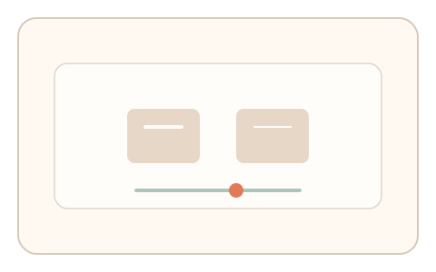
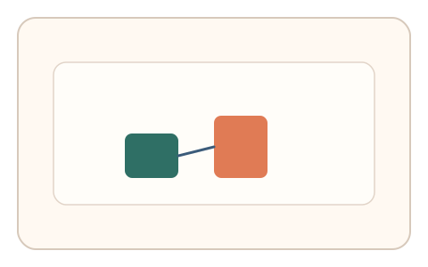

#136
E：双底座耦合 × 双信号 × 多阶段/双任务（认知偏置 + 生理/时域）
已扩展
虚轮廓‑阈值联测
描绘虚轮廓后调节对称或对比阈值，记录路径误差与阈值差异。
概念原文
用户描绘虚轮廓后立即调节对称/对比阈值，系统进行任务内相对比较。
将补全路径与阈值调节绑定。
研究背景
虚轮廓依赖知觉补全，对称/对比阈值反映感知敏感度。将补全路径与阈值调节绑定，可形成复合信号并提升鲁棒性。
核心机制
- 呈现虚轮廓线索并要求描边。
- 随后进入对称/对比阈值调节。
- 记录描边偏差与阈值位置。
- 进行任务内相对比较与一致性判定。
用户流程
- 步骤 1：用户描绘虚轮廓路径。
- 步骤 2：调节阈值到刚可辨别。
- 步骤 3：系统对比路径误差与阈值。
判定信号
虚轮廓描边偏差
补全能力会影响路径贴合程度。
阈值位置与微调
阈值反映感知敏感度与试探行为。
判定逻辑
描边偏差与阈值需在基线范围且存在自然微调；过于完美或无调整判异常。
对抗面
- 脚本绘制理想路径并设定固定阈值
- 重放历史描边与调节轨迹
防御与缓解
- 随机化虚轮廓形状与位置
- 加入轻微噪声与遮罩
- 多轮任务取相对比较
可达性与风险
提供更粗描边与高对比版本，支持键盘或触控替代。
- 精细描边对部分用户不友好
- 显示质量影响阈值判断
可视化状态

状态 1：虚轮廓描边
根据线索描绘虚轮廓。

状态 2：阈值调节
调节对称/对比到刚可辨别。

状态 3：联测判定
比较描边与阈值特征。
参考资料
Illusory contours
说明知觉补全与虚轮廓。
Contrast sensitivity
说明对比阈值的感知特性。